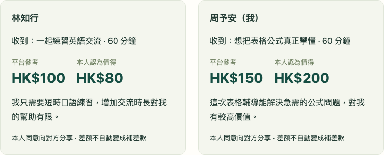

Hourlink：把能力依據、雙方價值與原回報義務，
放進一份可以履行和結清的約定。
該找誰？
一小時換一小時合理嗎？
我先幫忙，對方退出怎麼辦？
選人、比例和回報，
需要逐筆協商。
來自發起人的需求與產品假設；未當作獨立試用者驗證。

輔導 HK$150／小時
英語 HK$100／小時
相關能力影響時薪。
約定投入影響總額。
沒有通用積分或永久匯率。準備須事前納入；實際耗時不自動改價。
| 控制案例 | 平台建議 | 共同接受範圍 | 結果 |
|---|---|---|---|
| 至少90／最多60 | 90分鐘 | 無交集 | 不成單 |
| 雙方只接受60 | 90分鐘 | 60分鐘 | 可協商60 |
參考價接近，不等於雙方願意交換。
自願方案也可能保留參考價差。
輔導已驗收。
原45分鐘英語仍須履行，
或由雙方明確豁免。
按輪限制先行投入。
保留已確認貢獻。
原義務未結清前不關單。
| 120↔180交換 | 先行限制 | 輪數 | 首輪未回報投入 | 流程命令 |
|---|---|---|---|---|
| 較細保護 | 30分鐘 | 4 | 30分鐘 | 18 |
| 較少操作 | 60分鐘 | 2 | 60分鐘 | 10 |
命令=2次簽署＋每輪2項服務各提交與驗收。
不含協商、排期、爭議，不代表耗時或保證追回損失。
每小時港幣參考值。
18組控制實驗公開參數影響。
沒有復核能力證據。
接受條件沒有交集。
準備超過合法先行限制。
| 對照方式 | 公開描述的做法 | Hourlink取捨 |
|---|---|---|
| Timebanking UK | 每小時等值；跨成員互助 | 本單比例不同；失去通用性 |
| Upwork付費合同 | 時薪或固定里程碑付款 | 服務互換；無真實支付保護 |
| 群聊人工協商 | 待驗證的流程假設 | 結構化原義務；增加操作 |
官方：Timebanking UK Overview；Upwork Help：Hourly and Fixed-Price。2026-10-03查閱，只比較列明機制。
目前沒有可核驗的獨立試用回饋。
不把身份切換算作參與人數。
回想真實求助。
選人、比較比例、嘗試拒絕。
先履約後退出、填匿名回饋。
回饋由本人下載；同意匿名公開後才進入比賽材料。
逐案例對賬資金、時間、原義務與預訂。
React／TypeScript + FastAPI + SQLite。
核心流程不依賴AI或外部API。
社群小規模試用，
核對條款理解、協商與新用戶進入成本，
再校準能力係數、工時及價格基準。
github.com/mumu-bird/hacku-2026-covalue